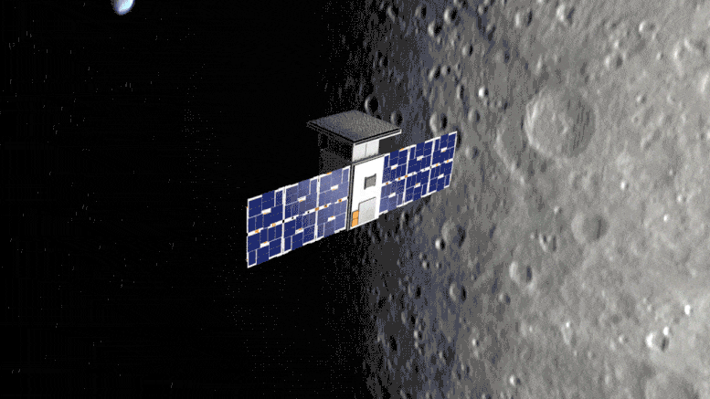
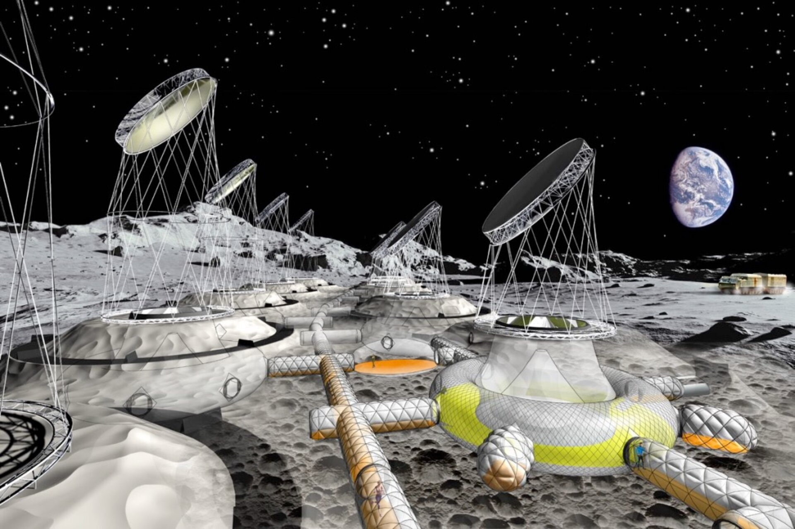
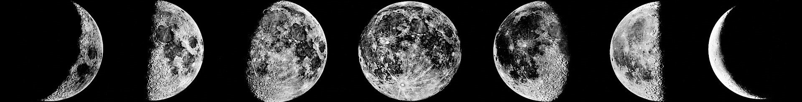

Project description
Our Moon Camp is called ‘Malalo Village, ‘one of the largest Moon Camps in the future. This place is modern, innovative, and technically developed. We give astronauts abilities and specially made technologies to produce food themselves, explore and use the lunar environment, and change their lifestyles. short, a lot of interesting adventures await you that you will never forget.
About safety
There is no atmosphere to protect its surface from the ravages of cosmic radiation, solar wind and micrometeorite impacts. The surface of the moon is covered with a thin layer of fine, charged, reactive dust capable of entering habitats, and vehicle compartments, where it can cause the health problems of crew members. The base area is protected by a wall that completely covers the astronauts’ residence.
About the need
The lunar base is a very innovative opportunity through which we will make many discoveries. This base has scientific purposes. The moon has a unique meaning for all cosmic uses. The moon is the nearest source of material located far away from earth’s gravity. For more information you can visit Moon Camp Challenge website and see my and my team project: Moon Camp
